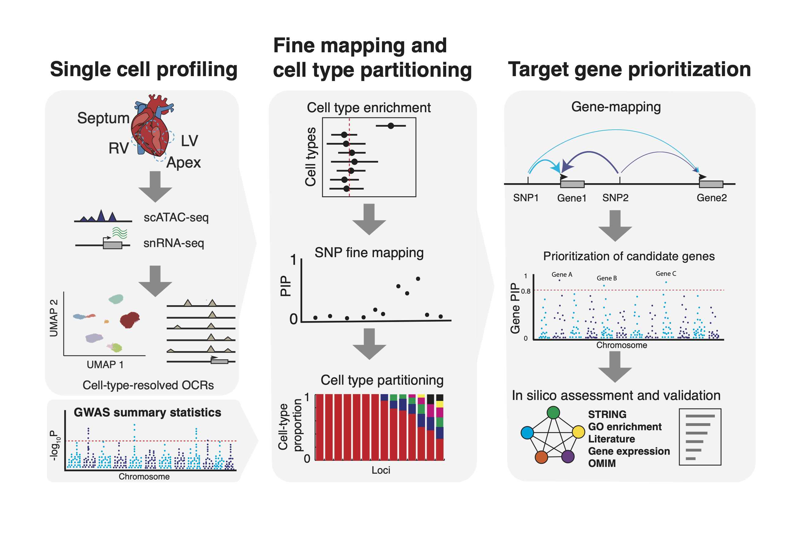

Last updated: 2023-05-11
Checks: 2 0
Knit directory: aFib_heart_atlas_paper/
This reproducible R Markdown analysis was created with workflowr (version 1.7.0). The Checks tab describes the reproducibility checks that were applied when the results were created. The Past versions tab lists the development history.
Great! Since the R Markdown file has been committed to the Git repository, you know the exact version of the code that produced these results.
Great! You are using Git for version control. Tracking code development and connecting the code version to the results is critical for reproducibility.
The results in this page were generated with repository version d4a4ec6. See the Past versions tab to see a history of the changes made to the R Markdown and HTML files.
Note that you need to be careful to ensure that all relevant files for
the analysis have been committed to Git prior to generating the results
(you can use wflow_publish or
wflow_git_commit). workflowr only checks the R Markdown
file, but you know if there are other scripts or data files that it
depends on. Below is the status of the Git repository when the results
were generated:
Ignored files:
Ignored: .DS_Store
Ignored: data/
Unstaged changes:
Modified: README.md
Note that any generated files, e.g. HTML, png, CSS, etc., are not included in this status report because it is ok for generated content to have uncommitted changes.
These are the previous versions of the repository in which changes were
made to the R Markdown (analysis/index.Rmd) and HTML
(docs/index.html) files. If you’ve configured a remote Git
repository (see ?wflow_git_remote), click on the hyperlinks
in the table below to view the files as they were in that past version.
| File | Version | Author | Date | Message |
|---|---|---|---|---|
| Rmd | d4a4ec6 | kevinlkx | 2023-05-11 | fixed the links |
| html | 2c928fd | kevinlkx | 2023-05-11 | Build site. |
| html | 9e78387 | kevinlkx | 2023-05-11 | Build site. |
| Rmd | 0cdd4f6 | kevinlkx | 2023-05-11 | fixed the links |
| html | a253a3c | kevinlkx | 2023-05-11 | Build site. |
| html | 879707e | kevinlkx | 2023-05-11 | Build site. |
| Rmd | 3f3bf57 | kevinlkx | 2023-05-11 | added the workflow diagram |
| Rmd | dc945b5 | kevinlkx | 2023-05-10 | created the index page with links to code repository |
| html | d33847a | kevinlkx | 2023-05-10 | Build site. |
| html | cb846c8 | kevinlkx | 2023-05-10 | Build site. |
| Rmd | 1575f94 | kevinlkx | 2023-05-10 | wflow_publish("analysis/index.Rmd") |
| Rmd | 085d366 | kevinlkx | 2023-05-10 | Start workflowr project. |
This repository contains code and data resources to accompany our paper: “Single-cell genomics improves the discovery of risk variants and genes of Atrial Fibrillation”.
Genome-wide association studies (GWAS) have linked hundreds of loci to cardiac diseases. However, in most loci the causal variants and their target genes remain unknown. We developed a combined experimental and analytical approach that integrates single cell epigenomics with GWAS to prioritize risk variants and genes. We profiled accessible chromatin in single cells obtained from human hearts and leveraged the data to study genetics of Atrial Fibrillation (AF), the most common cardiac arrhythmia. Enrichment analysis of AF risk variants using cell-type-resolved open chromatin regions (OCRs) implicated cardiomyocytes as the main mediator of AF risk. We then performed statistical fine-mapping, leveraging the information in OCRs, and identified putative causal variants in 122 AF-associated loci. Taking advantage of the fine-mapping results, our novel statistical procedure for gene discovery prioritized 46 high-confidence risk genes, highlighting transcription factors and signal transduction pathways important for heart development. In summary, our analysis provides a comprehensive map of AF risk variants and genes, and a general framework to integrate single-cell genomics with genetic studies of complex traits.
Single-cell genomics improves the discovery of risk variants and genes of cardiac traits. Alan Selewa*, Kaixuan Luo*, Michael Wasney, Linsin Smith, Chenwei Tang, Heather Eckart, Ivan Moskowitz, Anindita Basu, Xin He, Sebastian Pott. medRxiv 2022.02.02.22270312; doi: https://doi.org/10.1101/2022.02.02.22270312
We implemented the computational workflow in the R package Mapgen. 
Additional analysis scripts and notebooks:
All source code and software in this repository are made available under the terms of the MIT license.